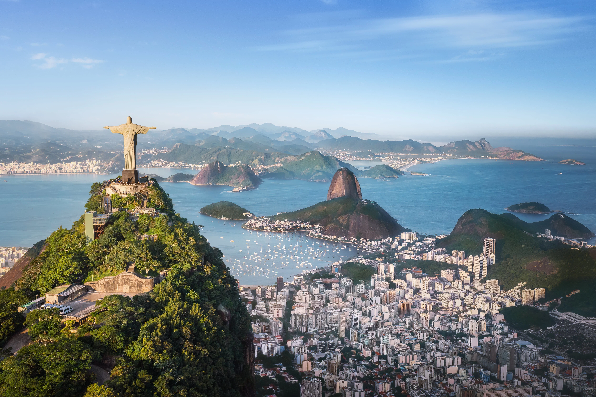

АКТУЕЛНА ПОНУДА

РИО ДЕ ЖАНЕИРО И КОПАКАБАНА
Рио де Жанеиро, Бразил
30.07 - 07.08
Откријте го енергичниот Рио де Жанеиро, еден од најпознатите градови во Јужна Америка. Уживајте во легендарната плажа Копакабана, прекрасните погледи од планината Корковадо и познатата статуа Христос Искупителот. Очекуваат ве сончеви плажи, бразилска култура, музика, вкусна храна и незаборавна атмосфера.
ЈУЖНОАМЕРИКАНСКА АВАНТУРА
Еден од најпознатите и најатрактивни градови во Бразил, препознатлив по прекрасните плажи, планинските пејзажи и живата атмосфера. Градот е сместен покрај Атлантскиот Океан и нуди впечатлива комбинација од природни убавини, култура и урбан живот. Меѓу најпознатите знаменитости се Христос Искупителот и планината Шеќерна глава, додека крајбрежните населби Копакабана, Ипанема и Леблон се познати по своите плажи, шеталишта, ресторани и кафулиња.
Една од најпознатите плажи во светот и еден од симболите на Рио де Жанеиро. Позната е по долгата песочна плажа, прекрасниот поглед кон Атлантскиот Океан и живата атмосфера која владее во текот на целиот ден. Покрај плажата се протега познатото шеталиште Avenida Atlântica, со бројни кафулиња, ресторани и места за одмор. Копакабана е идеална за прошетка, фотографирање, уживање покрај морето и запознавање со препознатливиот ритам на Рио.
Една од најпознатите природни знаменитости на Рио де Жанеиро, карактеристична по својата впечатлива карпеста форма и положбата покрај заливот Гуанабара. До врвот се пристигнува со жичара, при што патувањето овозможува прекрасни погледи кон градот и океанот. Од врвот се отвора панорамски поглед кон Рио, Копакабана, околните планини и крајбрежјето, што ја прави локацијата особено атрактивна за фотографирање и уживање во пејзажите.
Две од најпознатите и најелегантни крајбрежни населби во Рио де Жанеиро, познати по прекрасните песочни плажи и погледите кон Атлантскиот Океан. Ипанема е особено позната по живата атмосфера, шеталиштето и бројните кафулиња, ресторани и продавници, додека Леблон е препознатлив по помирната и порафинирана атмосфера. Крајбрежјето е идеално за прошетки, одмор, фотографирање и уживање во прекрасните зајдисонца.
Националниот парк Тижука претставува огромна тропска шума сместена во срцето на Рио де Жанеиро и една од највпечатливите природни области во градот. Паркот е познат по густата тропска вегетација, планинските предели, водопадите и бројните природни видиковци. Посетата овозможува бегство од градската гужва и уживање во природата, а воедно открива и сосема поинакво лице на Рио, каде урбаниот пејзаж се спојува со бујната тропска природа.
Историското срце на Рио де Жанеиро, каде се среќаваат богатото минато, колонијалната архитектура и модерниот градски живот. Областа е позната по Praça XV, историските градби и традиционалните градски улици. Во овој дел од градот се наоѓаат и познатите Селаронски скали, препознатливи по шарените керамички плочки, како и квартот Санта Тереза, познат по својата боемска атмосфера, уметнички галерии и тесни улички.
Состанок со групата на аеродром во Скопје, 2 часа пред летот. Следува диретен лет до Рим, пошто следи диретен лет кон Рио де Жанеиро и пристигнување на аеродром. По завршувањето на аеродромските процедури следува организиран трансфер до хотелот и сместување. По сместувањето следува време за одмор и освежување. Попладнето е предвидено за прва прошетка во околината на хотелот и запознавање со Копакабана. Вечерта е слободна за вечера и индивидуални активности. Ноќевање во хотел.
Појадок во хотелот и организирана прошетка по познатата плажа Копакабана. Следува време за уживање покрај Атлантскиот Океан, фотографирање и одмор. Потоа е предвидена прошетка по познатото шеталиште и слободно време за кафе, ручек и индивидуално разгледување. Попладнето продолжува со слободни активности покрај плажата. Вечерта е слободна за одмор и уживање во атмосферата на Рио. Ноќевање во хотел.
Појадок во хотелот и организирано тргнување кон планината Корковадо. Следува посета на Христос Искупителот, една од најпознатите знаменитости на Рио де Жанеиро. Од врвот се овозможува панорамски поглед кон градот, заливот и околните планини. По разгледувањето следува слободно време за фотографирање и одмор. Во попладневните часови групата се враќа во хотелот. Вечерта е слободна за индивидуални активности. Ноќевање во хотел.
Појадок во хотелот и организирано тргнување кон Шеќерна глава. Следува возење со жичара до врвот и уживање во прекрасните погледи кон Рио, Копакабана и Атлантскиот Океан. По разгледувањето е предвидено слободно време за фотографирање и уживање во пејзажите. Потоа следува пауза за кафе и ручек, по што групата се враќа во хотелот. Вечерта останува слободна за прошетка и одмор. Ноќевање во хотел.
Појадок во хотелот и организирана посета на историскиот центар на Рио де Жанеиро. Следува прошетка низ Praça XV, покрај Царската палата и низ традиционалните градски улици. Програмата продолжува со посета на познатите Селаронски скали и квартот Санта Тереза. Потоа следува слободно време за ручек, кафе и индивидуално разгледување. Во попладневните часови групата се враќа во хотелот. Вечерта е слободна за одмор. Ноќевање во хотел.
Појадок во хотелот и организирано тргнување кон плажите Ипанема и Леблон. Следува прошетка покрај крајбрежјето и време за уживање во познатата атмосфера на јужниот дел од Рио. Патниците ќе имаат слободно време за кафе, ручек, фотографирање и индивидуално разгледување. Попладнето е предвидено за одмор покрај морето и слободни активности. Во договореното време следува враќање во хотелот. Вечерта е слободна. Ноќевање во хотел.
Појадок во хотелот и организирана посета на Националниот парк Тижука. Следува прошетка низ една од најголемите урбани шуми во светот, со можност за уживање во тропската природа и планинските пејзажи. Во текот на денот е предвидено време за фотографирање и одмор во природата. По завршувањето на посетата следува враќање во Рио де Жанеиро. Вечерта е слободна за индивидуални активности, вечера и одмор. Ноќевање во хотел.
Појадок во хотелот и слободен ден за индивидуално уживање во Рио де Жанеиро. Патниците можат самостојно да го организираат денот за шопинг, прошетка, плажа, кафе и ручек. Денот е погоден и за повторно уживање на Копакабана или посета на места кои не биле опфатени во организираната програма. Вечерта е слободна за вечера и последно уживање во атмосферата на Рио. Ноќевање во хотел.
Појадок во хотелот и одјавување согласно предвиденото време. По собирањето на багажот следува организиран трансфер до аеродромот. По пристигнувањето следува пријавување за летот и завршување на потребните аеродромски процедури. Потоа следи диретен лет кон Рим па директен лет кон Скопје. По пристигнувањето и преземањето на багажот завршува организираното патување.